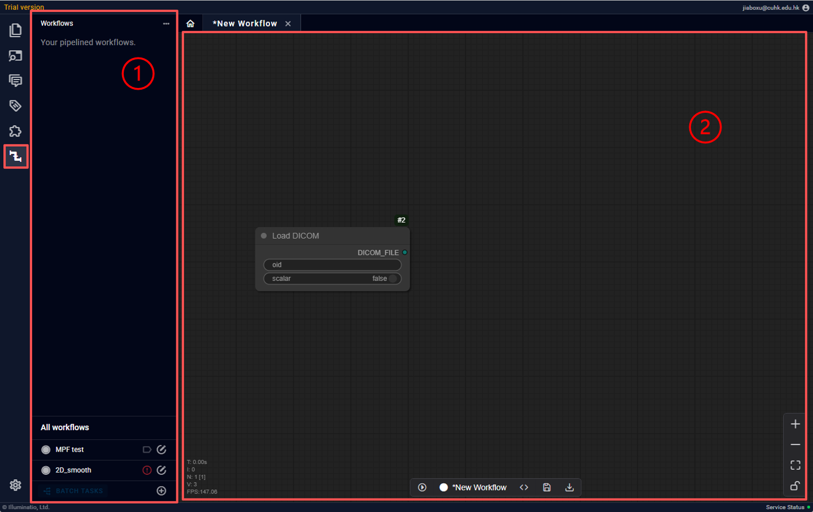
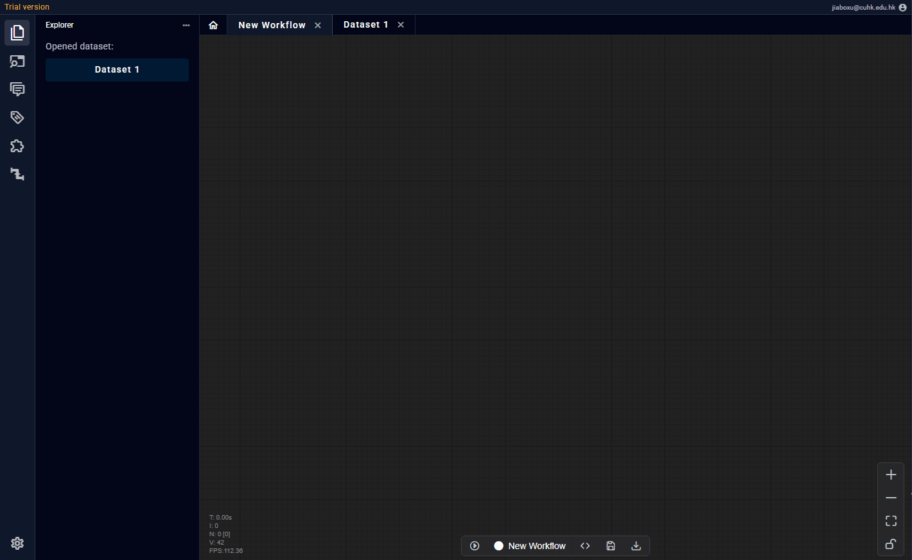
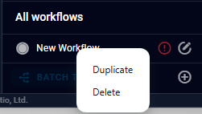
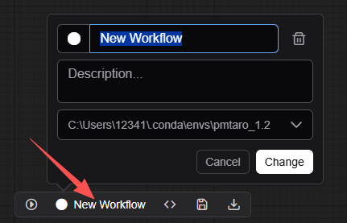

工作流页

工作流页由左侧功能区打开，开启后界面分为两块： 1. 已存工作流标签区：用于使用已有的工作流 2. 当前工作流操作区：用于单次运行或编辑当前工作流在工作流页可以进行一下操作： - 创建工作流 - 复制/删除/重命名工作流 - 编辑当前工作流 - 运行当前工作流
创建/编辑工作流
 工作流由N个节点串联组成，节点与节点之间可以相连。连接规则仅为同类型可连。一个节点的输入必须都有连接（可选输入除外），但对输出没有要求。可以理解为要想运行节点就必须满足它的输入，但是它的输出并不一定都用得到。对工作流的任何编辑都需要点击下方的“保存键”进行确认。
工作流由N个节点串联组成，节点与节点之间可以相连。连接规则仅为同类型可连。一个节点的输入必须都有连接（可选输入除外），但对输出没有要求。可以理解为要想运行节点就必须满足它的输入，但是它的输出并不一定都用得到。对工作流的任何编辑都需要点击下方的“保存键”进行确认。
节点分为以下几类： - 输入节点 - 转换节点 - 插件节点 - 输出/预览节点 接下来对以下节点分别描述
节点类型
| pipeline类型 | 颜色 |
|---|---|
| BOOLEAN | ● |
| INT | ● |
| FLOAT | ● |
| STRING | ● |
| DICT | ● |
| TABLE | ● |
| 1D | ● |
| 2D | ● |
| 3D | ● |
| 4D | ● |
| FILE | ● |
| JSON_FILE | ● |
| DICOM_FILE | ● |
| NIFTI_FILE | ● |
| IMAGE_FILE | ● |
| DICOM_FILE_LIST | ● |
| SERIES_FILE_LIST | ● |
| STUDY_FILE_LIST | ● |
输入节点
 作为数据流的起点，输入节点不允许用户自定义，必须使用软件预设的几个节点（如上图）。主要分为DICOM加载类和常量类。
作为数据流的起点，输入节点不允许用户自定义，必须使用软件预设的几个节点（如上图）。主要分为DICOM加载类和常量类。
DICOM加载类必须以DICOM层级数据为输入，输入一定都是DICOM文件，且这些文件必须来自软件内已存的数据集。目前提供： - DICOM输入节点：用户可以拖动Instance层数据放入此节点 - Series输入节点：用户可以拖动Series层数据放入此节点。当“过滤”开启时，用户可以选择以当前Series内的特定Instance作为输出，同时可以以Series为输入（详见） - Study输入节点：用户可以拖动Study层数据放入此节点。当“过滤”开启时，用户可以选择以当前Series内的特定Instance作为输出

输入节点可以彼此嵌套，如 study → series 最后以instance为输出。转换节点
复制/删除/重命名工作流

对于已经存储的工作流，右键可以进行复制/删除操作
点击工作流操作区下方的工作流名称，可以修改标签颜色，名称和运行环境（与插件环境相同）